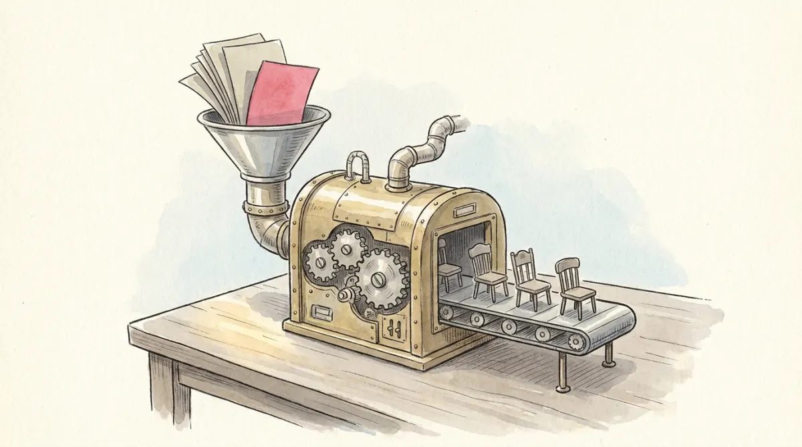

Elections are the main mechanism by which people express how they want to be governed: the wire connecting the room full of citizens to the handful who decide. Essential and universal for democracies, yes. But here is the lecture's opening puzzle, planted deliberately: non-democratic regimes hold elections too, and not carelessly, but at great expense. Hold the puzzle; section 6 pays it off.
Between the vote cast and the seat filled stands a machine: electoral rules structure how votes are cast and how they convert into seats and offices. The machine is never neutral. It shapes people's choices before the vote (why waste a ballot on a hopeless third party?) and transforms them after it. Same voters, different machine, different parliament: you are about to watch it happen.
First dial on the machine: who may feed it. The franchise widened over two centuries, and the sequence is exam material:
An imaginary country, one single election, four parties: Rose 39.4%, Blue 33.9%, Amber 20.7%, Green 6%. The votes are frozen. Only the machine changes.
Read the damage report. Under FPTP (first past the post), Rose turns 39% of votes into 60% of seats: it wins many districts narrowly, and a district won by one vote pays the same as a landslide. Amber's fifth of the country, spread thin, collects one seat; Green's voters, everywhere and never first, get nothing at all. Under PR the same ballots produce a parliament that looks like the electorate, and no one holds a majority: welcome to coalition country (Poli-09). Now slide the threshold past 6% and watch the machine quietly delete Green even under PR: thresholds are the anti-fragmentation valve, and a bar of 3 to 5% is typical.
The course's fuller menu, for naming purposes: single-member systems include FPTP, the alternative vote (rank candidates), and two-round systems (France: top two fight a runoff). Multi-member PR comes as one national constituency (Israel, Netherlands) or many districts (Spain, Brazil), via list systems or mixed systems (Germany, Italy). And three dials differentiate PR machines: district magnitude (seats per district: bigger = more proportional), intra-party choice (closed lists: the party orders candidates; open lists: you pick your favorite), and the threshold you just played with.
Sometimes the people vote on the issue itself: a referendum, "a mass electorate votes on some public issue" (Butler and Ranney), a direct-democracy tool inside representative democracy. Three typologies to memorize, each a yes/no pair:
| By obligation | Mandatory (the constitution requires one, e.g. for amendments) vs optional. |
|---|---|
| By trigger | Popular initiative (citizens collect signatures: 50,000-100,000 in Switzerland; in Italy 500,000 signatures, or 5 regional councils, or a fifth of a chamber) vs institutional initiative (governments or parliaments call it). |
| By effect | Decision-promoting (rare: creates new policy) vs decision-controlling (checks a decision already made: abrogative or rejective, Italy's specialty). |
And the guard-rail, exam-quotable: to avoid the risk of majoritarianism (50%+1 steamrolling minority rights on a single emotional afternoon), access to referendums is deliberately restricted: signature thresholds, limited sources, judicial review of admissibility. Direct democracy is kept on a leash by design, and the course wants you to say why.
Now the opening puzzle. Why does the locked room from Poli-04 bother with ballots? Because elections serve autocrats: they gather information, distribute spoils, split oppositions, refresh legitimacy paint. Levitsky and Way's competitive authoritarianism returns here with full force: formal democratic institutions are genuinely the main route to power, and the incumbent's abuse of the state keeps the field tilted beyond fairness.
So should a citizen of such a regime vote at all, knowing the count is stacked and turnout may flatter the regime? The course's careful answer, built from justice-based, epistemic, and procedural theories of voting's value: yes, usually, because authoritarian elections retain a residual democratic value. Voting reasserts the right to choose representatives, reaffirms inter-elite competition as a principle, and reminds elites they can be held to account; the same democratic principles that justify voting there oblige choosing the most democratic alternative on offer. The vote as a message in a bottle: the procedure is adulterated, and keeping its remnants alive is precisely the point.
The machine-recognition reflex the MCQs test:
| Elections | the people-to-power link; rules structure casting AND conversion of votes into seats |
| Franchise story | gentry → working men (XIX) → women (post WWII) → age down; compulsory voting: Australia, Belgium, (Chile) |
| Single-member family | FPTP · alternative vote · two-round systems (France) |
| PR family | national or multi-district lists · mixed systems (Germany, Italy) |
| Three PR dials | district magnitude · open vs closed lists · threshold (3-5% typical) |
| Duverger's law | FPTP → two-party systems (mechanical + psychological effects); PR → multi-party |
| Master trade-off | representativeness vs governability; no free lunch |
| Referendum typologies | mandatory/optional · popular/institutional initiative · decision-promoting/controlling; access restricted to curb majoritarianism |
| Italy's popular initiative | 500,000 signatures, or 5 regional councils, or 1/5 of a chamber; abrogative specialty |
| Authoritarian elections | serve the regime, yet retain residual democratic value; vote for the most democratic alternative |
One pile of ballots, two machines, opposite parliaments. Whoever designs the machine designs the game.
Six questions in the written test's style.